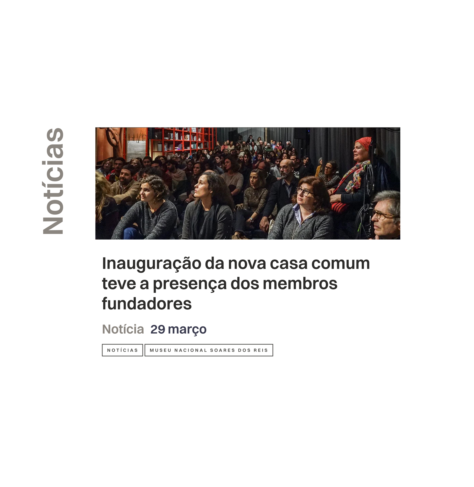
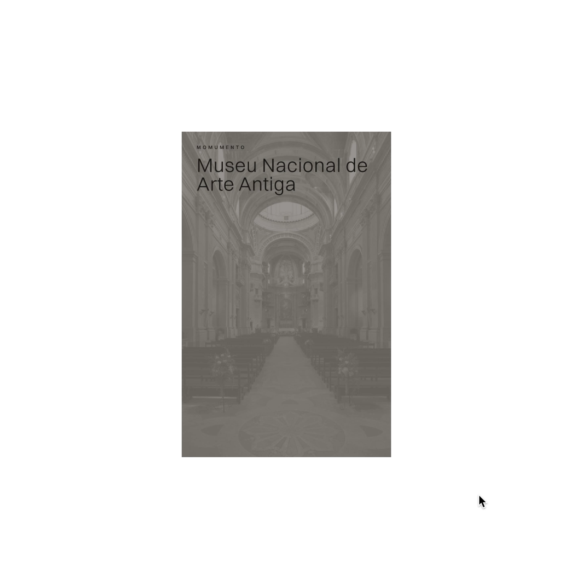
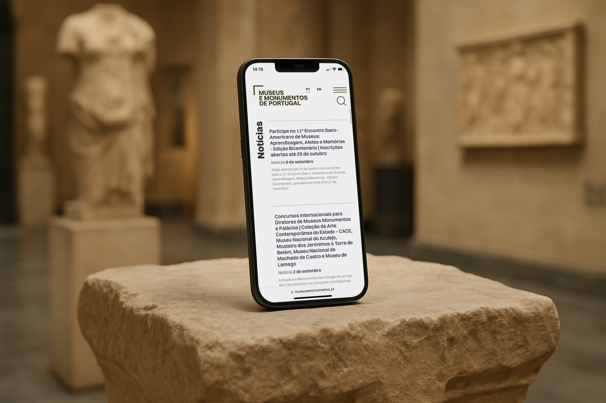
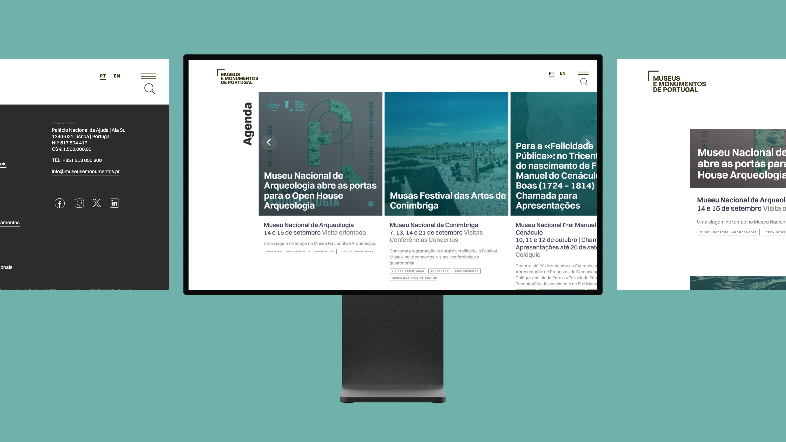
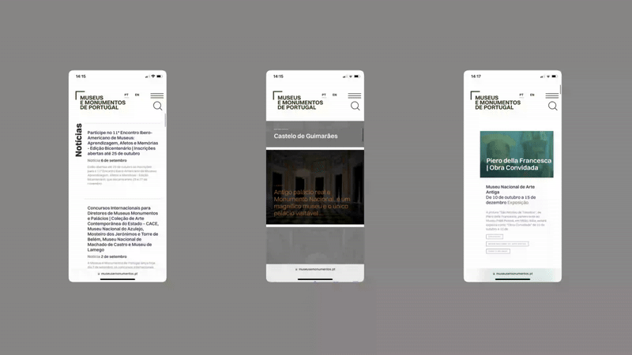
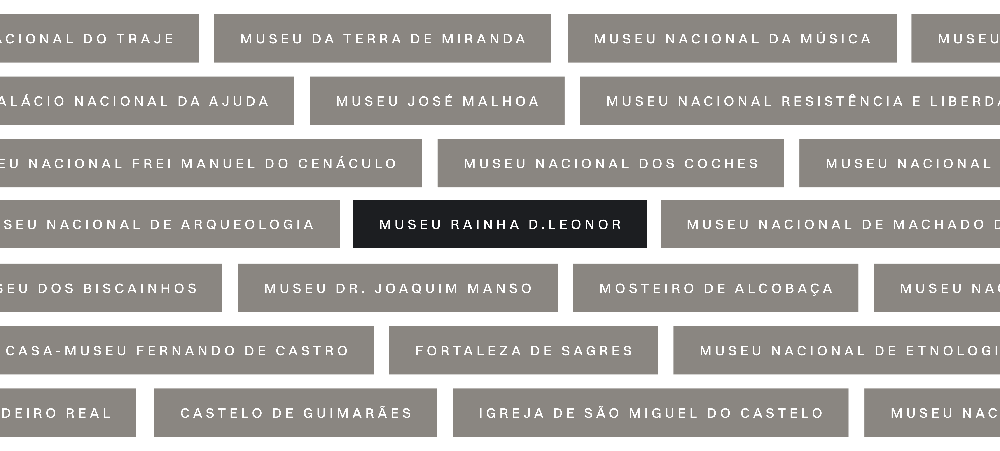

A perpetual work-in-progress manifesto: this website is the temporal body of a living identity, shaped by process, perspective, and shared momentum.
Art direction
UX/UI Design
Full Stack Development
The Shared Visions identity is a living system — flexible,
responsive, and grounded in a shared process. Born from the fog, it
reflects the uncertainty and potential of creative collaboration.
This guide outlines the core visual elements — the asterisk as a
symbol of transition, the grid as a quiet structure, and typography
as expressive order — and defines how they come together with
consistency across formats. While the identity evolves with the
project, its foundational elements remain steady, ensuring clarity,
coherence, and a collective voice throughout its expression.
Direcção Arte, Design: Mário Roda
Design, UI-UX, Development: Ricardo Sousa, Rui Marques
Full Stack Developer, Code: Jorge Oliveira
—
All ideas presented, including all related documents are exclusively the property of rota náutica, which includes all assets, website and this brandbook. Kickvoidlöop developed this project with rota náutica close collaboration. In this brandbook we use several mockups to better suit real application contexts, although be aware the end result may differ from presented images.